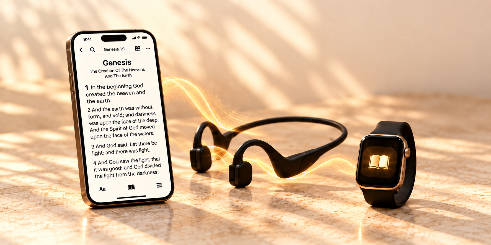

A deeper study.
A simpler way to listen.
The new Biblical Heritage #StudyBible brings reading, listening, and your library into one connected study experience.
Choose your device below. Each store listing shows the version currently available to install.

Take Scripture with you
Listen through your headset. Link audio to your study materials, group related passages, and control iPhone playback and looping with Bible Remote on Apple Watch.
Follow the connections
Explore more than 600,000 built-in cross-reference links. Move from a passage to related verses, commentary, Strong’s numbers, and interlinear tools.
Make the study your own
Keep notes, bookmarks, and highlights. Organize with hashtags, adjust a text range with selection handles, and build connected study lists.
Bring your library
Import commentaries and other supported reading materials, explore eLibrary resources, and back up your study work to your chosen location.
Start listening
If the reader shows Audio Off, turn on Read aloud in Autoscroll Settings, close settings with Done, then press Play. Follow the listening quick start.
The trial and permanent unlock
The upcoming store release offers fourteen days of full access, followed by an optional one-time permanent unlock. No subscription or automatic charge. If you do not purchase after the trial, access stops and your saved work stays preserved.
Keep learning
Read the updated new-version guide for listening, Watch controls, selection, hashtags, imports, and access.